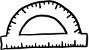

Sarmala dönüşen bir kuşatıcılığı var adına "evham" denilen o dipsiz kuyunun. Bir kez içine düşmeyegörün, neresi çıkış, neresi giriş bilemediğinizden, ilerledikçe batıp, battıkça ilerlediğinizi sanabiliyorsunuz derinden. "Azal!" demekle de olmuyor. Çünkü evham doğurgan, evham narsist, ne yöne baksa kendi suretine rastlayabilmek için durmaksızın çoğalıyor, kendi kopyalarını doğuruyor. Olmuyor "azal!" demekle. Şu hayatta azalması gerektiğini öğrendiği an, inadına çoğalan, cabadan doğuran bir şey varsa, o da evham çünkü. Korkunun bile bir son merhalesi, doyma noktası var. O safhaya vardığında insan, kendisini en çok korkutan şeyin içine boğazına kadar batmış bile olsa, korkmuyor, korkamıyor artık. Aşırı korku, kendini uyuşturuyor. Evhama gelince, o dipsiz bir kuyunun ağulu suyu. Ne bir doz aşımı, ne de kendine özgü bir panzehiri var. Korkunun kaynağı ne kadar somut ve malum ise, bir o kadar soyut ve müphem evhamınki de. Bu yüzden insan, niçin korktuğunu zorlanmadan tespit edebildiği halde, tam olarak neden ötürü hep böyle evhamlı gezdiğini saptayamıyor. Hal böyle iken, aşırı evhamlı birine daha fazla evhamlanması durumunda başına gelecek olumsuzlukları anlatmak, zaten nicedir cismani değil de kimyevi bir düşmanla cebelleşen bu savaş yorgununun kendine duyduğu, duyabileceği güveni büsbütün kaybederek, daha da fazla evhamlanmasından başka bir sonuç vermiyor. Evham beyinleri ince ince kemirmekle kalmıyor. Ülkelerin iç siyasetlerini, yerel yönetimlerin işleyiş biçimini, seçmen davranışlarını, ulusal bütçeden neye ne kadar pay ayrılacağını da etkiliyor. Evham boyundan büyük işler peşinde, ülkelerin dış politikalarını belirliyor. Evham savaşları, savaşlar evhamları körüklüyor. Ve Amerikan medyası bugünlerde sürekli ve sürekli evham pompalıyor.
Evin güzel, yuvan sıcak. Karın eskisi kadar mutlu görünmüyor ama iyi kötü yürüyor evliliğin. Ortak sorumluluklarınız var. Ev güzel-yuva sıcak-çocuklar büyümekte ama belalarla dolu bir arı kovanı bu dünya. Tehlike her an her yerde. Sebebi malum: Senin sahip olduklarına sahip olamayanlar var. Sırf onlar yüzünden işte, bir gün pattadak kaybedebilirsin elindekileri. Düşman meçhul ama hem de düşman malum. Her an herkes düşman. Hani şu panayırlarda, fuarlarda fotoğraf çektirmek için arkasında durup yüzündeki boşluktan içeri kafamızı uzattığımız karton modeller gibi bir şey düşman. Bedeni aynı, varlığı sabit modelin; ama işte fotoğrafı çekilen değiştikçe, onun da değişiyor yüzü. O düşman gidince yerine yenisi geliyor. Eskisini unutup yenisine yoğunlaşabildiğin müddetçe sorun yok. Toplumsal amnezi ile kolektif evham el ele gidiyor. Her şey aileyi koruyabilmek için. Otoriter baba figürü olarak senin, korumakla yükümlü, geleceğinden sorumlu olduğun bir ailen var. Kadınlar ve çocuklar aciz yaratıklar. Onlar aciz kalsın serpilemesinler ki sen çok yaşa otoriter baba! Ailene yönelik herhangi bir tehlikenin nereden geleceği belli olmadığından silahını dolu tutmanda fayda var. Savunma amaçlı elbette. Bir de belki ara sıra arkadaşlarla birkaç tek atıp, yaban ördeği avlamaya gidersiniz dağlara.
Bush yönetimine yönelik eleştirel yazıları ve araştırmalarıyla dikkatleri çeken Berkeley Üniversitesi akademisyenlerinden George Lakoff'a göre, Amerika genelinde işte bu kadar basit ama sonuçları böylesine karmaşık bir korku ve evham dalgası esiyorsa eğer, bunun merkezinde "katı baba imgesi" var. Lakoff bugün ABD'de yankılanan anti-terörist söylemin bu ataerkil, otoriter, muhafazakâr baba imgesini kullanıp körüklediğini öne sürüyor. İç ve dış politika birer makrokozmos. Orada ne oluyorsa bire bir hane düzeyinde tekrarlanıyor. Ülkeyi teröristlerden korumak için savaş çığırtkanlığı yapıyor yönetim; aileyi olası tehlikelerden korumak için silahlanıyor babalar. Zaten tıka basa silahlı olan Amerika, şimdilerde daha da hızla silahlanıyor.
Ne var ki tüm bu evham dumanının ortasında, cılız-cesur, yalnız-ayrık sesler de yükseliyor bu aralar. Savaş karşıtlarının sesleri. ABD'nin Irak'a girmesinin ardında yatan sebepleri eleştirel bir zihinle didik didik edenlerin her daim azınlıkta kalan sesleri. Televizyonun, radyonun ve basının silah ve savaş fetişizmine rağmen, bilhassa Amerikan üniversitelerinde gidişatı yüksek sesle eleştiren beyinler de var. Bu muhalif dalganın önemli bir atılımı son zamanlarda çeşitli mecralarda savaş karşıtı ilan, dilekçe ve bildiriler yayımlamak oldu. Bunları hazırlayanlar oldukça heterojen bir kesim. Aralarında Hıristiyan din adamları da var, işadamları, entelektüeller, öğrenciler de. Haliyle hazırlanan metinler de çok çeşitli. Kimisi insancıl, etik ya da dini sebeplerden ötürü karşı çıkıyor Irak'a müdahale edilmesine; bazıları daha ekonomik ya da politik sebeplerden ötürü. İşte bunlardan bir tanesi son zamanlarda epey ses getirmişe benziyor. İlanda klasik Sam Amca posteri aynen korunmuş, iki temel farkla. Sam Amca'nın yüzü yerine Usame bin Ladin'in yüzü görülüyor, altında da şu yazı: "Usame Amca'nın sana ihtiyacı var gidip Irak'ı işgal etmen için!" İşte bu ilan internet üzerinden inanılmaz bir hızla yayıldı, savaşa karşı çıkan ya da tereddütle bakanlara ulaşarak. Fakat işin ironik yanı, söz konusu ilan bu kadar çok duyulmasını, hâkim medyanın savaş yanlısı sözcüleri tarafından hedef tahtası yapılmasına borçlu. Ancak onlar konuşursa konuşuluyor meseleler; ama yüz seksen derece ters taraftan.
Bu haliyle savaş karşıtı kampanyalar ne yazık ki sadece küçük bir kesimini etkileyebiliyor halkın. Barış yanlılarının şimdiye kadar harcayabildikleri tutarın 200.000 dolardan az olduğu varsayılıyor. Bunun karşısında ise milyarlarca dolarlık bir savaş çığırtkanlığı ve zaten silahlanmış, daha da silahlanma gereği duyacak kadar evham kumkuması bir kamuoyu var. Ortalama Amerikan vatandaşı için her yabancı isim aynı derecede meçhul ve çoğu kez meşum zaten. Bu sayede Bush yönetimi neredeyse hiç çaba harcamadan Usame bin Ladin'den Saddam'a kaydırabildi savaşılacak hedefi. Düşmanın yüzü ve ismi değişti sadece; katı ve sabit kaldı varlık sebebi ise. İster Amerika'da olsun ister Türkiye'de, her nevi savaş çığırtkanlığının ürettiği otoriter baba modelleri var, bire bir hane ya da büsbütün ülkeler düzeyinde. Ve adına evham denilen o dipsiz kuyunun suyu, daha da ziyade, daha da kesif, daha da katran pompalanıyorsa dört bir yanımızdan, dönüp de bu yapıya yakından bakmakta fayda var, çünkü nerede olurlarsa olsunlar en çok bu otoriter baba modelleri çıkar sağlıyor körükledikleri korku ve evham ortamlarından.
Boston